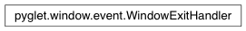

WindowExitHandler Class¶
-
class
WindowExitHandler¶ Determine if the window should be closed.
This event handler watches for the ESC key or the window close event and sets self.has_exit to True when either is pressed. An instance of this class is automatically attached to all new pyglet.window.Window objects.
Warning
Deprecated. This class’s functionality is provided directly on Window in pyglet 1.1.
Variables: has_exit – True if the user wants to close the window. Attributes: